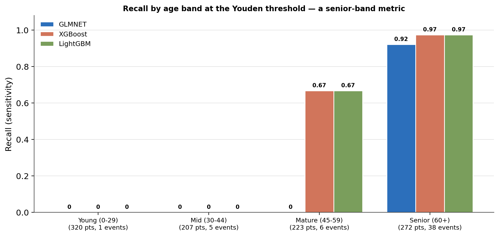
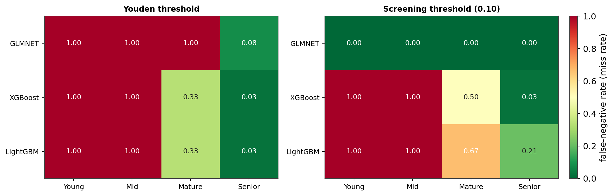
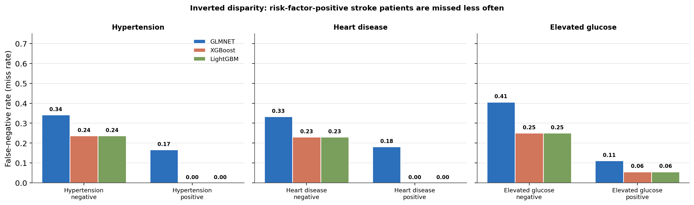
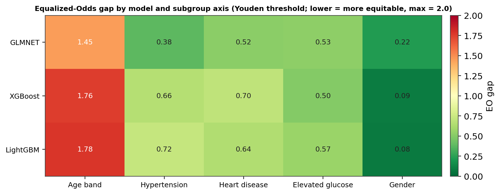
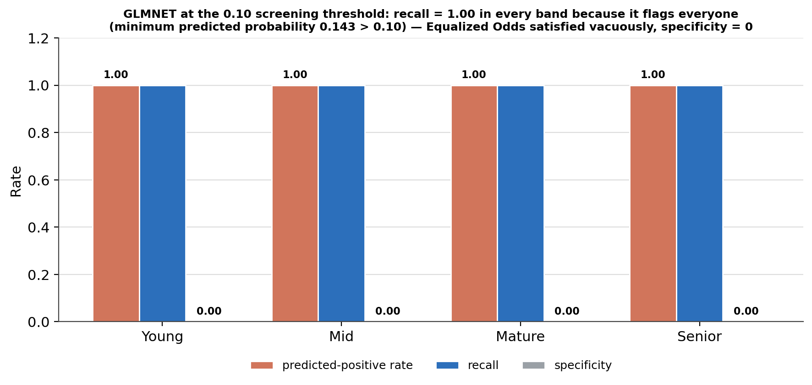
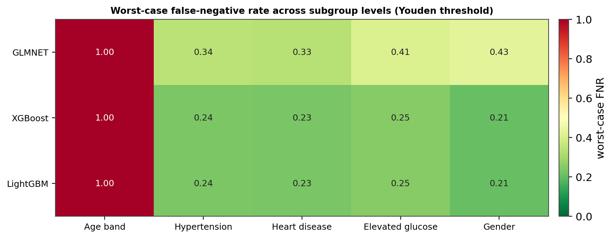

A Clinical ML Equity Audit: Age-Band Disparities, Risk-Factor Detection Asymmetry, and Fairness Metrics
Decomposing a stroke-screening model’s headline recall across five clinical and demographic subgroups — and showing that a single overall number conceals a structural age-band failure.
A subgroup audit of three tuned stroke-screening models on a 1,022-patient test set (50 events). The headline conceals a failure: overall recall of ~0.82 is a senior-band metric — the 60+ band holds 76% of test strokes and is detected at ~0.97, while every model misses every stroke in the mid and young bands. Inverted risk-factor disparity: patients with hypertension, heart disease, or high glucose are detected better; the markerless stroke is the hardest case. A vacuous-fairness trap: the linear model at a 0.10 threshold scores a perfect Equalized-Odds gap of 0.00 — only because it flags every patient positive.
algorithmic fairness, equity audit, subgroup analysis, equalized odds, demographic parity, false-negative rate, stroke screening, class imbalance, age disparity, cryptogenic stroke, model governance, Youden threshold, Python
Abstract
The preceding modelling study reported overall recall of 0.70–0.82 for three tuned stroke-screening classifiers on a 1,022-patient held-out test set (50 stroke events, 4.9% prevalence). This audit asks whether that detection is distributed across the population or concentrated in one subgroup. It decomposes each model’s false-negative rate across five axes — age band, hypertension, heart disease, elevated glucose, gender — at two operating points (each model’s Youden threshold and a 0.10 screening threshold), and formalises the result with the Equalized-Odds and Demographic-Parity gaps. The finding is unambiguous: overall recall is a senior-age-band metric. The 60+ band holds 38 of 50 test events (76%) and is detected at 0.92–0.97; in the mid (30–44) and young (0–29) bands, every model misses every stroke (false-negative rate 1.00), and in the mature (45–59) band the tree models detect 4 of 6 while the linear model detects none. The age-band Equalized-Odds gap reaches 1.78 of a possible 2.0. Against the clinical risk factors the disparity inverts — risk-factor-positive patients are detected more reliably, because they carry the feature signals the models weight — leaving the markerless stroke as the structurally hardest case. A separate result: at the 0.10 screening threshold the linear model records a perfect Equalized-Odds gap of 0.00 across every axis, but only because its minimum predicted probability (0.143) exceeds the threshold, so it classifies every patient positive — fairness satisfied vacuously. The audit is descriptive; no fairness constraints were imposed during training.
Keywords: algorithmic fairness, equity audit, equalized odds, false-negative rate, stroke screening, age disparity
Introduction
A model that reports 82% recall on a rare outcome invites a follow-up question: 82% of whom? Aggregate metrics on an imbalanced problem can be carried almost entirely by one dominant subgroup while other groups bear the miss-rate burden. This audit — the final analytical stage of a six-notebook stroke-risk pipeline — decomposes the three tuned classifiers from the modelling study across five clinically and demographically meaningful subgroups, at two operating points, to characterise the equity landscape before any deployment decision.
The audit is deliberately descriptive. The models were tuned on overall ROC-AUC with no fairness objective; this study measures the consequences of that, it does not remediate them. Remediation — per-subgroup thresholds, re-weighting, constrained optimisation — is a separate exercise that this audit is meant to inform.
Method
Models and test set
Three tuned pipelines from the modelling study — GLMNET (Elastic Net), XGBoost, LightGBM — were loaded with the exact 1,022-patient held-out test set (50 stroke-positive, 4.9%). Predicted probabilities were generated and their distributions checked before any slicing: GLMNET’s probabilities span [0.143, 0.775] (M = 0.398); XGBoost’s [0.001, 0.662] (M = 0.079) and LightGBM’s [0.000, 0.769] (M = 0.057) are compressed toward zero, as gradient-boosted ensembles under class weighting tend to be.
Subgroup axes
Five axes were audited (Table 1): a four-level age band (young 0–29, mid 30–44, mature 45–59, senior 60+); the three clinical risk factors retained as independent predictors in the inferential study (hypertension, heart disease, elevated glucose); and gender, included as an equity completeness check because male and female event rates in the test set are near-identical (4.96% vs. 4.84%).
Table 1
Test-Set Composition of the Five Subgroup Axes (N = 1,022; 50 Stroke Events)
| Axis | Level | n | Events | Event rate | Share of all 50 events |
|---|---|---|---|---|---|
| Age band | Young (0–29) | 320 | 1 | 0.31% | 2% |
| ” | Mid (30–44) | 207 | 5 | 2.42% | 10% |
| ” | Mature (45–59) | 223 | 6 | 2.69% | 12% |
| ” | Senior (60+) | 272 | 38 | 13.97% | 76% |
| Hypertension | No | 921 | 38 | 4.13% | 76% |
| ” | Yes | 101 | 12 | 11.88% | 24% |
| Heart disease | No | 967 | 39 | 4.03% | 78% |
| ” | Yes | 55 | 11 | 20.00% | 22% |
| Elevated glucose | No | 863 | 32 | 3.71% | 64% |
| ” | Yes | 159 | 18 | 11.32% | 36% |
| Gender | Female | 599 | 29 | 4.84% | 58% |
| ” | Male | 423 | 21 | 4.96% | 42% |
Note. Subgroup recall figures are only interpretable against these denominators: recall 0.90 on a slice with 2 events measures something different from recall 0.90 on a slice with 38.
Thresholds and metrics
Each model was evaluated at its Youden’s J threshold (0.615 GLMNET, 0.094 XGBoost, 0.036 LightGBM) and at a fixed 0.10 screening threshold (maximum-sensitivity operating point). For every subgroup level, the audit computed recall, false-negative rate (FNR / miss rate), specificity, false-positive rate, and predicted-positive rate; slices with zero or all positives were skipped. Two standard fairness metrics summarise each axis: the Equalized-Odds gap (Hardt et al., 2016) — the maximum pairwise true-positive-rate gap plus the maximum pairwise false-positive-rate gap across levels, bounded at 2.0 — and the Demographic-Parity gap (Dwork et al., 2012) — the maximum pairwise difference in predicted-positive rate.
Software and reproducibility
Python with scikit-learn, xgboost, lightgbm. The tuned pipelines and the exact test set are persisted artefacts; every figure and number here was recomputed from them and matched the original run.
Results
Age band: overall recall is a senior-band metric
The decomposition by age (Figure 1, Figure 2, Table 2) is the audit’s central finding. At the Youden threshold, the senior band (272 patients, 38 events) is the only band with strong detection — XGBoost and LightGBM at recall 0.974 (37 of 38), GLMNET at 0.921 (35 of 38). The mature band (223 patients, 6 events) splits the architectures: the tree models detect 4 of 6 (recall 0.667), GLMNET detects 0 of 6 — its 0.615 threshold is too high for any mature-band patient to clear. The mid band (207 patients, 5 events) and young band (320 patients, 1 event) are complete failures: every model misses every stroke (FNR 1.00). A classifier reported at 0.82 overall recall is, in operational terms, achieving near-perfect senior-band detection and near-zero detection everywhere else — GLMNET’s 35 true positives at Youden come entirely from the 272 senior-band patients, with zero contribution from the other 750.
Table 2
Recall and False-Negative Rate by Age Band and Model (Youden Threshold)
| Age band (events) | GLMNET recall / FNR | XGBoost recall / FNR | LightGBM recall / FNR |
|---|---|---|---|
| Young (1) | 0.00 / 1.00 | 0.00 / 1.00 | 0.00 / 1.00 |
| Mid (5) | 0.00 / 1.00 | 0.00 / 1.00 | 0.00 / 1.00 |
| Mature (6) | 0.00 / 1.00 | 0.67 / 0.33 | 0.67 / 0.33 |
| Senior (38) | 0.92 / 0.08 | 0.97 / 0.03 | 0.97 / 0.03 |
Note. The senior band supplies 76% of test events; the models’ behaviour there sets the headline number.
Figure 1
Recall by Age Band at the Youden Threshold

Note. Bars are labelled with the patient and event count per band. Detection is confined to the senior band, with a partial tree-model foothold in the mature band.
Figure 2
False-Negative Rate by Model and Age Band, at Both Thresholds

Note. Left — Youden thresholds. Right — the 0.10 screening threshold, where GLMNET’s all-green row is the vacuous-fairness artefact discussed below, not genuine detection.
Clinical risk factors: the disparity inverts
Against the clinical axes (Figure 3, Table 3) the pattern reverses: risk-factor-positive patients are detected more reliably than risk-factor-negative patients, consistently across hypertension, heart disease, and elevated glucose. At the Youden threshold, XGBoost and LightGBM achieve recall 1.00 for hypertensive stroke patients (12 of 12) and for heart-disease stroke patients (11 of 11), against 0.76–0.77 for the risk-factor-negative groups. GLMNET shows the same direction with wider gaps — its normal-glucose FNR reaches 0.41. The mechanism is coherent: risk-factor-positive patients carry the very features the models learned to weight, so their predicted probabilities clear the threshold more often. The markerless stroke — a patient who has an event without hypertension, cardiac disease, or glucose elevation — is the structurally hardest case for any fixed-threshold classifier, and it is exactly the cryptogenic presentation clinicians find hardest too.
Table 3
Recall for Risk-Factor-Positive vs. Risk-Factor-Negative Stroke Patients (Youden Threshold)
| Risk factor | Group (events) | GLMNET | XGBoost | LightGBM |
|---|---|---|---|---|
| Hypertension | positive (12) | 0.83 | 1.00 | 1.00 |
| ” | negative (38) | 0.66 | 0.76 | 0.76 |
| Heart disease | positive (11) | 0.82 | 1.00 | 1.00 |
| ” | negative (39) | 0.67 | 0.77 | 0.77 |
| Elevated glucose | positive (18) | 0.89 | 0.94 | 0.94 |
| ” | negative (32) | 0.59 | 0.75 | 0.75 |
Note. Every model detects risk-factor-positive strokes better; GLMNET’s gaps are the widest (FNR gap up to 0.30 on glucose).
Figure 3
Inverted Disparity: Miss Rate for Risk-Factor-Positive vs. -Negative Stroke Patients

Note. Lower is better. The risk-factor-positive bars sit well below the negative bars in every panel — the opposite of the age-band pattern.
Gender: a modest, architecture-dependent gap
Gender (Table 4) behaves as expected for a near-balanced axis, with one wrinkle. At the Youden threshold the tree models carry a narrow gap in the male-favoured direction (male recall 0.857 vs. female 0.793; FNR gap 0.064 each). GLMNET carries a wider gap in the opposite direction — female recall 0.793 vs. male 0.571, an FNR gap of 0.222, the widest gender disparity of any model — most plausibly reflecting the age–gender correlation in this cohort interacting with GLMNET’s high threshold. GLMNET’s Demographic-Parity gap on gender is only 0.010: it flags near-identical proportions of men and women; the disparity is in detection accuracy, not flagging rate.
Table 4
Gender: Recall and FNR Gap (Youden Threshold)
| Model | Female recall | Male recall | FNR gap |
|---|---|---|---|
| GLMNET (Elastic Net) | 0.79 | 0.57 | 0.222 |
| XGBoost | 0.79 | 0.86 | 0.064 |
| LightGBM | 0.79 | 0.86 | 0.064 |
Note. The tree models are the more gender-equitable architectures here; GLMNET’s gap is detection-side, not flagging-side.
Formal fairness gaps
The Equalized-Odds gaps (Figure 4, Table 5) compress the picture. Age band is the dominant disparity source — Equalized-Odds gap 1.78 (LightGBM), 1.76 (XGBoost), 1.45 (GLMNET), close to the theoretical maximum of 2.0; GLMNET’s is lower only because its senior-band recall is lower, narrowing the true-positive-rate component. The clinical risk factors sit in a moderate 0.38–0.72 band. Gender is the most equitable axis for the tree models (0.08–0.09) and roughly three times worse for GLMNET (0.22). Fairness here is not a single-number property of a model — it spans nearly the full range of the metric depending on which axis is examined.
Table 5
Equalized-Odds Gap by Model and Axis (Youden Threshold; 0 = Equitable, 2.0 = Maximum)
| Axis | GLMNET | XGBoost | LightGBM |
|---|---|---|---|
| Age band | 1.45 | 1.76 | 1.78 |
| Hypertension | 0.38 | 0.66 | 0.72 |
| Heart disease | 0.52 | 0.70 | 0.64 |
| Elevated glucose | 0.53 | 0.50 | 0.57 |
| Gender | 0.22 | 0.09 | 0.08 |
Note. Demographic-Parity gaps follow the same ordering (age band: LightGBM 0.83, XGBoost 0.81, GLMNET 0.58).
Figure 4
Equalized-Odds Gap Surface: Model × Subgroup Axis

Note. Youden threshold. The distance between the greenest cell (gender, tree models) and the reddest (age band) spans almost the full colour range.
The vacuous-fairness result
At the 0.10 screening threshold, GLMNET records an Equalized-Odds gap and a Demographic-Parity gap of 0.00 on every axis (Figure 5). This must be read correctly. GLMNET’s minimum predicted probability is 0.143, above the 0.10 cut-off, so every patient is classified positive — true-positive rate 1.00 everywhere, false-positive rate 1.00 everywhere, specificity 0.00 everywhere, all gaps zero by construction. A trivially positive classifier satisfies Equalized Odds by definition, not by merit. Any governance review that saw GLMNET’s perfect screening-threshold fairness scores without this mechanism disclosed would be misled. The tree models, which retain genuine probability-based discrimination at 0.10, still show large age-band gaps there (XGBoost 1.74, LightGBM 1.32).
Figure 5
Vacuous Fairness: GLMNET at the 0.10 Screening Threshold

Note. Recall is 1.00 in every band because the model flags every patient; the Equalized-Odds gap of 0.00 is an artefact of that, not evidence of equity.
Consolidated worst-case surface
The worst-case FNR across levels of each axis (Figure 6) is the governance-ready summary. On the age-band axis, all three models hit worst-case FNR 1.00 at the Youden threshold — the mid and young bands. On the clinical axes, the tree models hold worst-case FNR to 0.21–0.25; GLMNET is worse on every one (0.33–0.43) and worst on gender (0.43). No model is adequate in the under-45 population at any non-degenerate threshold.
Figure 6
Worst-Case False-Negative Rate Across Subgroup Levels (Youden Threshold)

Note. The age-band column is the deployment blocker; the clinical columns favour the tree models.
Discussion
What the headline number hides
An overall recall of 0.82 on this cohort is an average weighted by where the events are — and 76% of them are in the senior band. The audit shows the models learned to detect senior-band strokes and essentially nothing else at their Youden thresholds. This is not a subtle bias; it is a categorical failure in two of four age bands. Reporting the aggregate without the decomposition would misrepresent the models as broadly capable screeners when they are narrow ones.
Two disparities, opposite directions
The age-band and risk-factor patterns point opposite ways, and both are explicable from the same fact: the models detect patients who carry the signals they were trained to weight. Older patients and risk-factor-positive patients carry those signals; younger and markerless patients do not. The clinically uncomfortable consequence is that the patients the model helps least are the ones a clinician would also find hardest — the young or cryptogenic stroke — so the tool adds least value exactly where human judgement is most stretched.
The screening-mode trap
GLMNET’s perfect fairness scores at the 0.10 threshold are a worked example of why fairness metrics need a classifier-behaviour check beside them. A model that flags everyone is perfectly equitable and perfectly useless. This is a documented counter-example for any future audit that reports strong fairness numbers without interrogating the predicted-positive rate.
Deployment implications
Three follow. First, age-stratified thresholds or a separate protocol for patients under 45 would be needed to address the age-band gap without retraining — the models cannot be deployed as-is for a general-population screen. Second, GLMNET must not be run at the 0.10 screening threshold on this pipeline vintage; its usable operating range is around its Youden point. Third, on the clinical axes, XGBoost and LightGBM are the more subgroup-equitable choices — worst-case FNR 0.21–0.25 versus GLMNET’s 0.33–0.43, and gender gaps a third the size.
Limitations
The audit inherits the modelling study’s limits: a single 80/20 split, one cohort, and only 50 test events — so the small-slice figures (mid band: 5 events; mature: 6; heart disease: 11) carry wide sampling uncertainty and a single misclassification moves a subgroup recall substantially. The fairness metrics are computed at fixed thresholds, not integrated over the operating curve. The audit is descriptive: it quantifies disparity but applies no mitigation, and the choice among mitigation strategies is itself a value-laden decision that belongs with the clinical and governance stakeholders.
Conclusion
The three tuned stroke-screening models detect strokes almost exclusively in patients aged 60 and over; in the mid and young age bands they miss every case. Against the clinical risk factors the disparity inverts, leaving the markerless stroke as the hardest case. Equalized-Odds gaps confirm age as the dominant disparity axis (up to 1.78 of 2.0) and gender as the most equitable for the tree models. The linear model’s apparently perfect fairness at a low screening threshold is an artefact of flagging every patient. None of the models is ready for general-population deployment without age-stratified operating points.
References
Barocas, S., Hardt, M., & Narayanan, A. (2019). Fairness and machine learning: Limitations and opportunities. fairmlbook.org.
Chen, I. Y., Pierson, E., Rose, S., Joshi, S., Ferryman, K., & Ghassemi, M. (2021). Ethical machine learning in healthcare. Annual Review of Biomedical Data Science, 4, 123–144. https://doi.org/10.1146/annurev-biodatasci-092820-114757
Dwork, C., Hardt, M., Pitassi, T., Reingold, O., & Zemel, R. (2012). Fairness through awareness. Proceedings of the 3rd Innovations in Theoretical Computer Science Conference, 214–226. https://doi.org/10.1145/2090236.2090255
Hardt, M., Price, E., & Srebro, N. (2016). Equality of opportunity in supervised learning. Advances in Neural Information Processing Systems, 29, 3315–3323.
Obermeyer, Z., Powers, B., Vogeli, C., & Mullainathan, S. (2019). Dissecting racial bias in an algorithm used to manage the health of populations. Science, 366(6464), 447–453. https://doi.org/10.1126/science.aax2342
Pedregosa, F., Varoquaux, G., Gramfort, A., Michel, V., Thirion, B., Grisel, O., Blondel, M., Prettenhofer, P., Weiss, R., Dubourg, V., Vanderplas, J., Passos, A., Cournapeau, D., Brucher, M., Perrot, M., & Duchesnay, É. (2011). Scikit-learn: Machine learning in Python. Journal of Machine Learning Research, 12, 2825–2830.
Rajkomar, A., Hardt, M., Howell, M. D., Corrado, G., & Chin, M. H. (2018). Ensuring fairness in machine learning to advance health equity. Annals of Internal Medicine, 169(12), 866–872. https://doi.org/10.7326/M18-1990
Youden, W. J. (1950). Index for rating diagnostic tests. Cancer, 3(1), 32–35. https://doi.org/10.1002/1097-0142(1950)3:1<32::AID-CNCR2820030106>3.0.CO;2-3
fedesoriano. (2021). Stroke prediction dataset [Data set]. Kaggle. https://www.kaggle.com/datasets/fedesoriano/stroke-prediction-dataset
Audit and figures by the author. Descriptive only — the models were not trained with fairness constraints, and no mitigation was applied. All subgroup metrics are single-split and single-cohort.